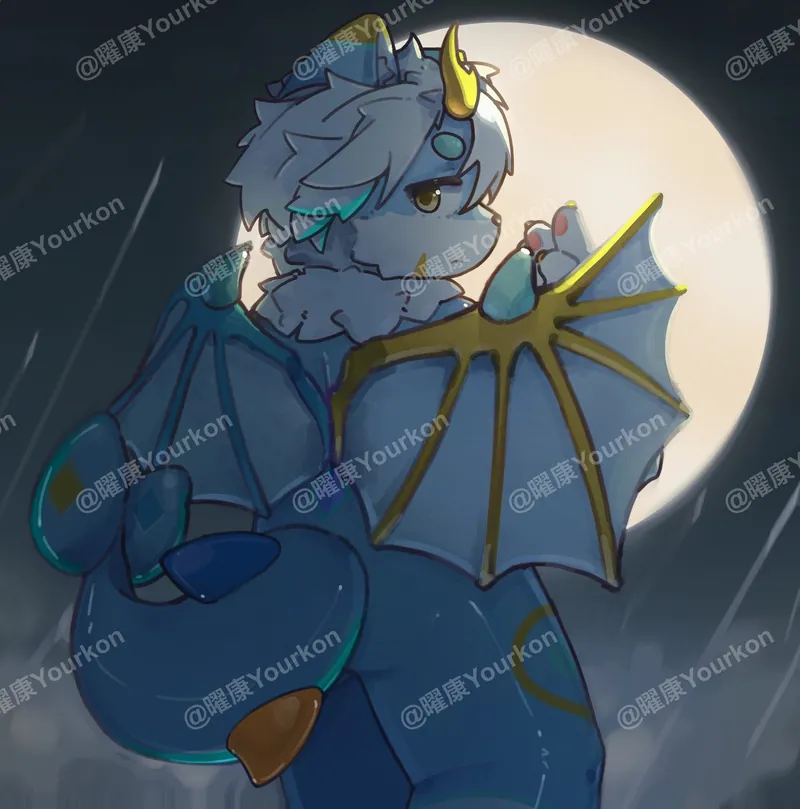
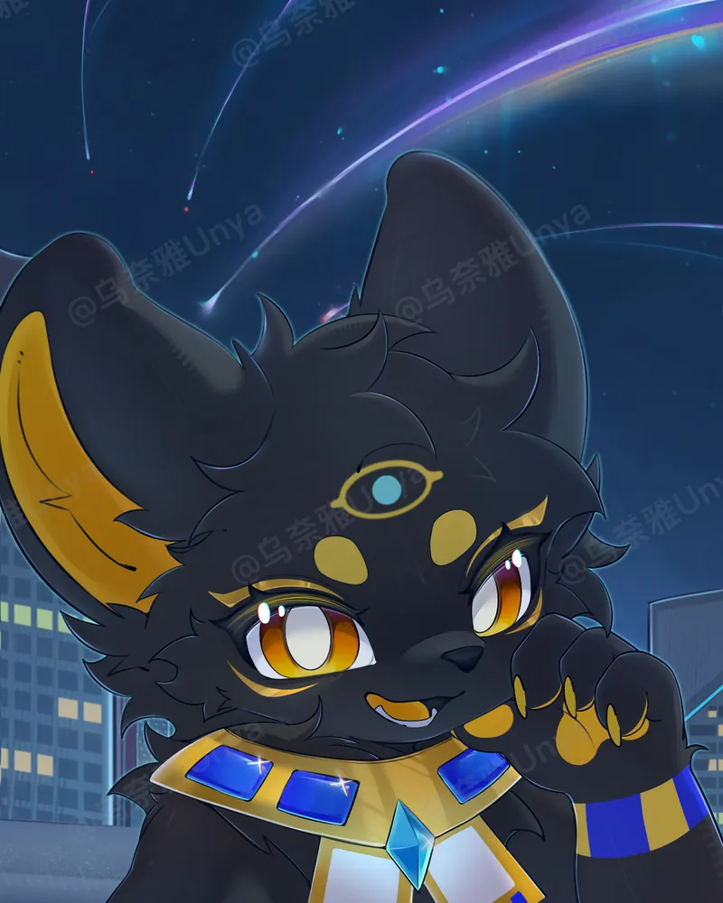
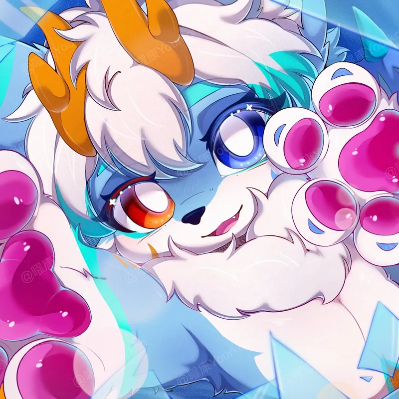
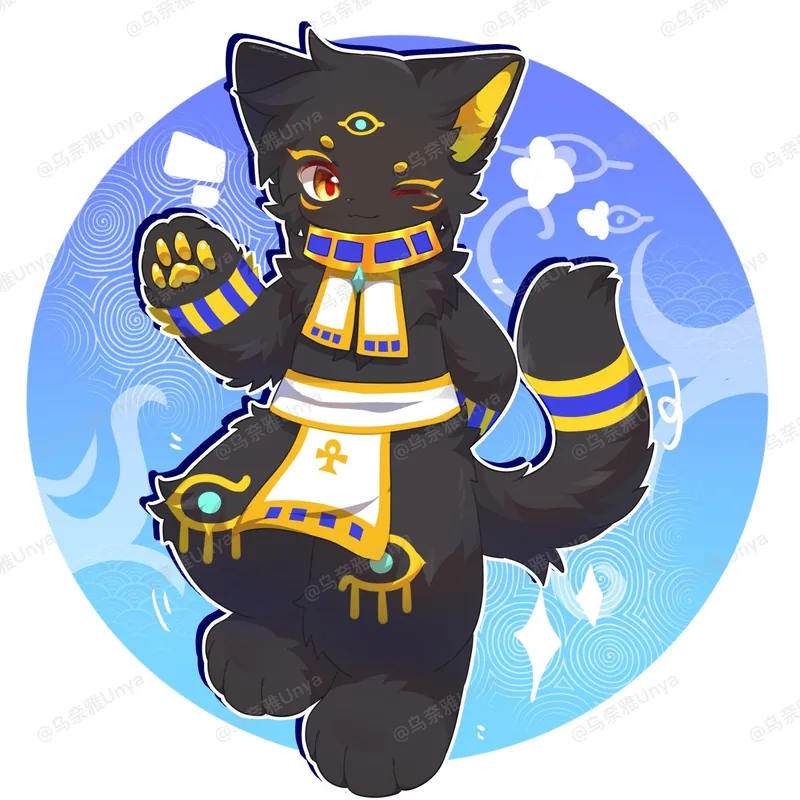
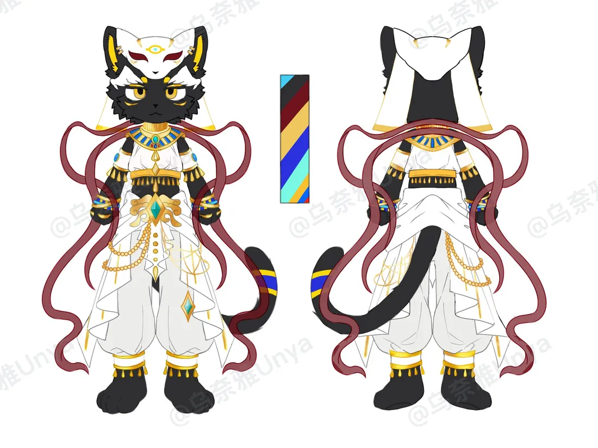

ⅠARRIVAL
抵达 · 什么都带不走
初来乍到的生命，会在抵达的瞬间失去生前所有的记忆。那些记忆化作一缕缕光点，向世界各处飞去。多数人醒来时，只勉强剩得下一个名字。
个人档案VOL. 01 · 交友扩列
YOURKON
「把失去的记忆一缕缕捡回来，
也在现实这一头，等一个你。」
这里放着我的兽设、我写下的世界，和一部还在往下写的故事。平时在忆潮空间里忙着找自己，闲下来也想多认识几个朋友——下面四扇门，随手敲。
01 — 世界观
一个关于记忆、死亡与重逢的地方。
这个世界里，凡不是因衰老而凋零的生命，死后都会来到一处名为「忆潮空间」的地方。它像一座深埋地底的洞穴——地板与天花板都是沉默的岩石，却开阔得几乎没有边界，也没有尽头。
这里没有昼夜，只有幽幽的微光，和远处传来的、像潮汐一样的涌动声。初来的人往往什么也不记得，只剩下一点点连自己都说不清的熟悉感。
初来乍到的生命，会在抵达的瞬间失去生前所有的记忆。那些记忆化作一缕缕光点，向世界各处飞去。多数人醒来时，只勉强剩得下一个名字。
记忆精华实在太多了。有时，大量的精华会汇聚在一起，像潮汐一样涌向某些地方。被潮水经过的生命，会被迫获取大量原本不属于自己的记忆——在无数陌生人生的冲刷下，慢慢失去自我。
据传，只要在这里找回自己全部失去的记忆精华，就能回到现实，迎来重生。所以总有人循着那点微光往前走。只是这个传说，至今还没有人真正走到过尽头。
死后的归处。岩石的地板与天花板，没有昼夜，只有远处像潮汐一样的涌动声。
生前记忆凝成的光点，漂浮在空间各处。它可以被人记住，也可以成为这里生命赖以生存的养料。
无主的记忆越积越多，便汇成周期性的潮涌。潮声所至，自我动摇。
被忆潮吞没、失去理智的生命。它们背负着无数陌生的记忆，像野兽一样在黑暗中游荡。
追忆者建立的聚落。巨大的城墙、嵌在墙上的投影屏，与覆盖全城的防护罩。城里有医院，也有定时出城巡逻的异常管理队。
一种信仰：相信寻回全部记忆便能重生。无数人前仆后继，才有了今天的城市与队伍。
02 — 角色
形象交给画，档案只记下他们在这个世界里的位置。

寻忆者 · 主角
生日、能力、生前的事，仍沉在记忆深处，等着被一缕一缕地拾起来。
他在同伴们的帮助下一点点寻回自己，也在过程中慢慢发现——这里遇见的人，与现实世界里的自己，并非毫无关系。

同行者 · 她
她的来历、性格与故事，都还笼罩在潮雾之中。
关于她的一切，都是忆潮深处尚未展开的一页。她与曜康的相遇，也许就藏在下一次涨潮之后。
光萤城异常管理队 · 「追忆」的追随者
「在这个世界里，知道自己的名字就够了。」
他把曜康从忆潮的边缘带回了光萤城，也把这座城市的规则、传说与危险，一件一件讲给了他听。
03 — 剧情
一个在黑暗里醒来的人，一段还没写完的寻忆之旅。
死亡如无情的冷锋降临。遗憾、不幸、冤屈、悔恨——这些痛苦并不会随着死亡消散。它们飘向一片属于记忆的神秘之地，潮汐在其间涌动，带来重生的希望，也带来失去灵魂的恐惧。
纯粹的记忆化作繁星光点，漂浮在这虚无缥缈的世界里。一颗青色的光点如火花般在空中飞舞，随即像是找到了多年未见的旧友，冲向地面，融入一位刚刚经历死亡的生命。
「我……是谁……？」
当然，在记忆的浪潮下，生灵们不会总是孤身一人。在忆潮空间的某些地方，存在着如同城市一般的聚落——每座城市都有自己独特的、对记忆的追求，也因此造就了信仰各不相同的人们。
「这……是哪里？」
「我是……谁？我好像叫……叫……曜康？」
似乎是幸运使然，他找回了自己的名字。可眼前是层层叠叠的怪石，和没有边界的黑暗与孤独。他不知道自己能做些什么，也不知道该往哪里去，只能在这片光怪陆离的大地上，开始漫无目的的游荡。
星光如海市蜃楼般浮在空中，怎么走都永远触不到那一缕象征希望的光。而黑暗里，还有比孤独更可怕的东西——它们匍匐在角落，静候猎物上门。
一双利爪从黑暗中扑出。曜康无力反击，几乎要默默接受自己的命运。就在那时，一道光直射而来，野兽应声倒地，肉体化作几粒星光，消散在空气里。
「你现在情况怎么样？需要救治吗？」
再次睁眼时，他躺在一辆救护车上，身边坐着一个自称「蒙卡纳」的兽——「追忆」的追随者，光萤城异常管理队的成员。他告诉曜康：天上的星光就是记忆精华；记忆会变成无主之物，聚成忆潮；被潮水淹没的人，会变成游离之体。
「在这个世界里，知道自己的名字就够了。曜康，欢迎你来到属于记忆的世界——忆潮空间。」
救护车驶向那座被金黄色星光包裹的城市。城墙之上嵌满投影屏，一层防护罩覆盖整座城。城里有医院，也有一个愿意让他先住下的家。
而在离光萤城不远的地方，一块岩石后面，一个神秘的身影正盯着那辆缓缓驶入城中的救护车。
「曜康，欢迎来到这个世界。」
第一章到此为止。那个人是谁，他为什么认识曜康——故事还在往下写。
空白的黑暗里醒来，只带走一个名字。
光萤城、异常管理队，与形形色色的生命。
一缕一缕，把「曜康」重新拼起来。
他发现，这里遇见的人，与现实中的自己有着千丝万缕的联系。
现实里的仇恨，与这里的羁绊，被摆上天平的两端。
故事写到这里，潮水还没有退
04 — 画廊
散落在空间里的光点，捡起来就是一张图。



我是曜康。喜欢兽设，也喜欢写点东西。想扩列的话随便说句话就好，别让门铃白响。
如果只是路过看看故事——也谢谢你走到了这里。